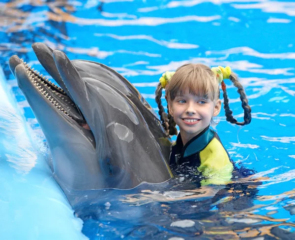
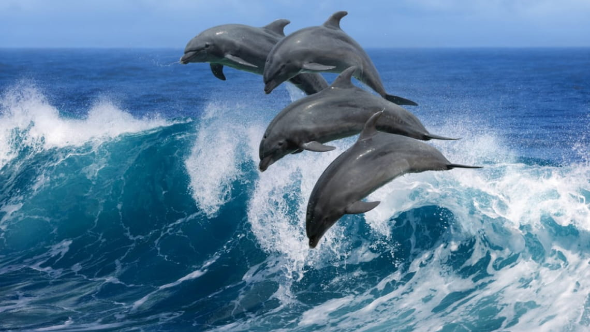
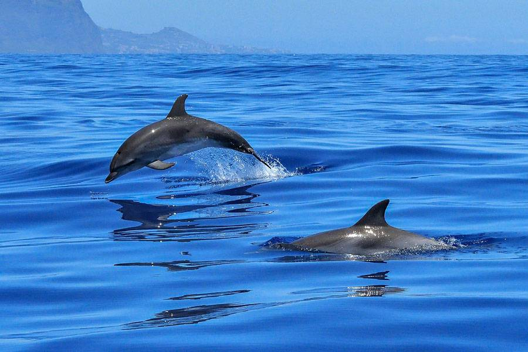
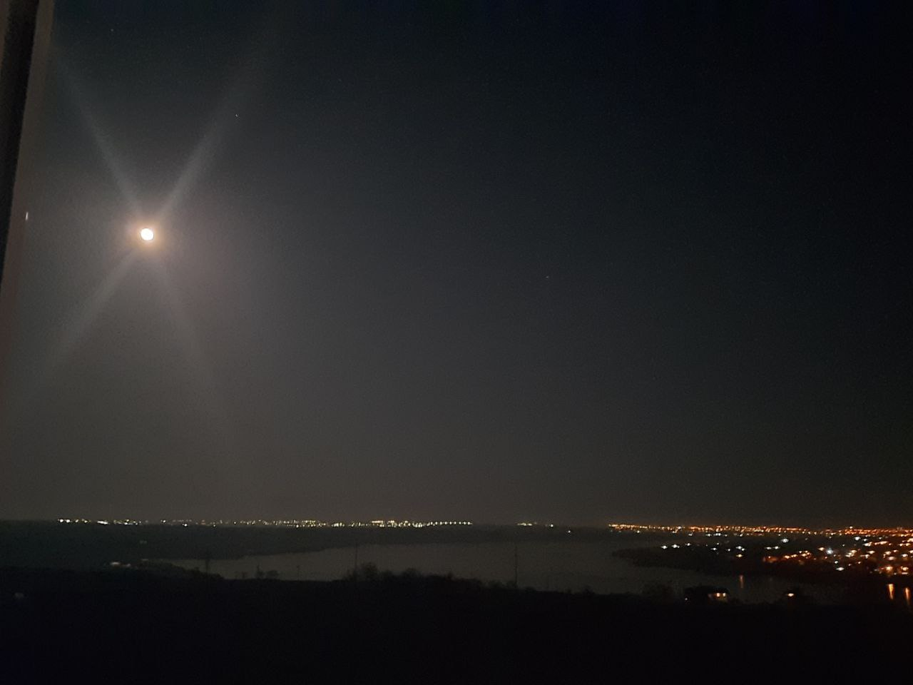
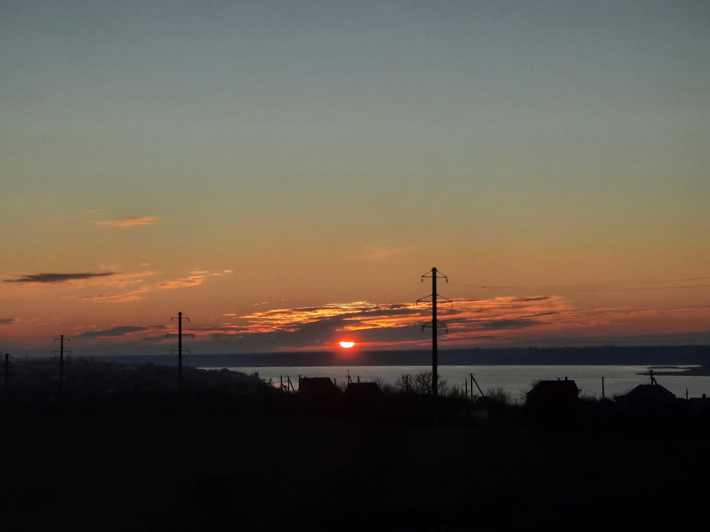
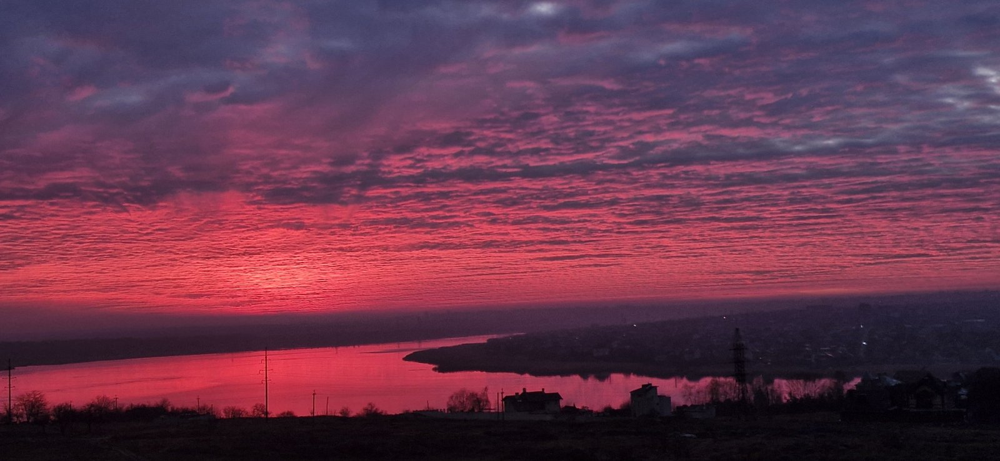
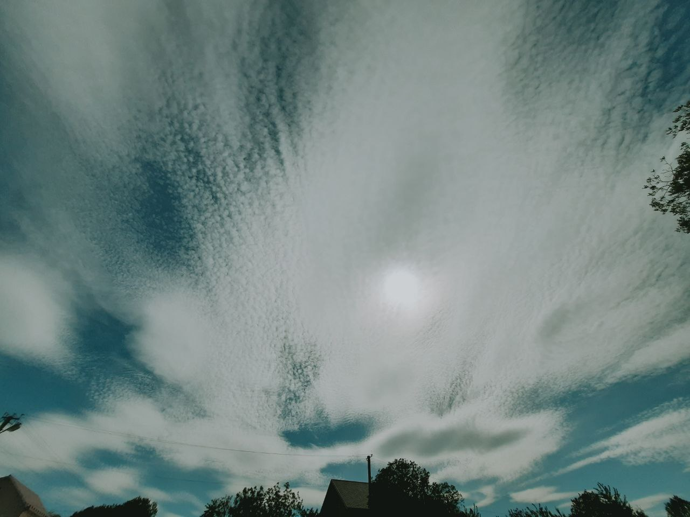
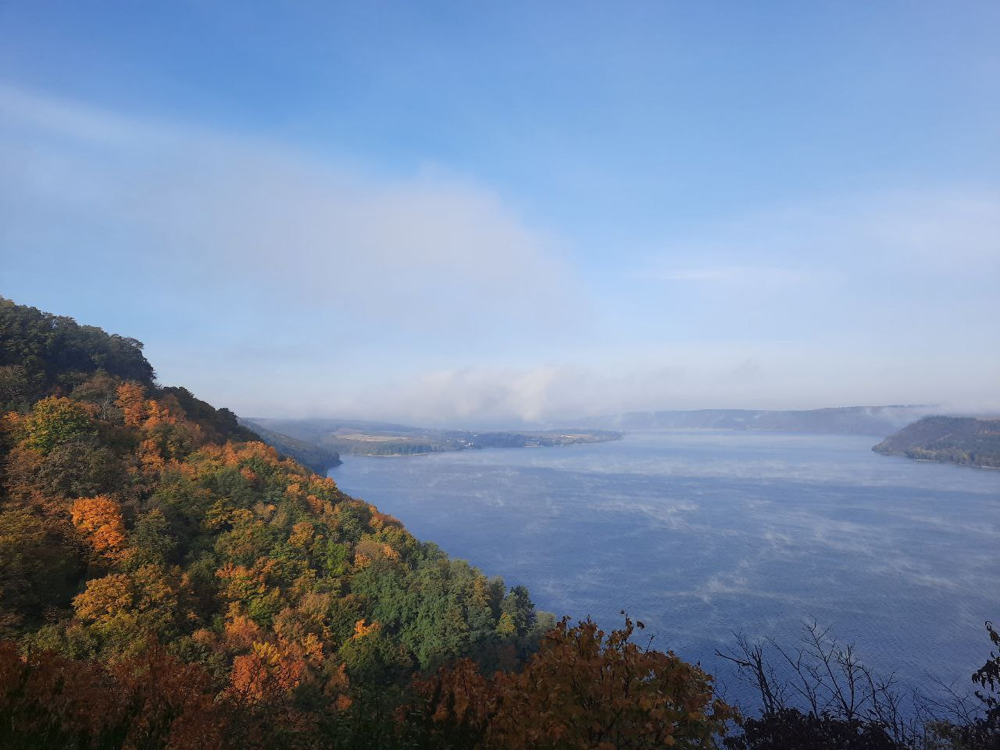
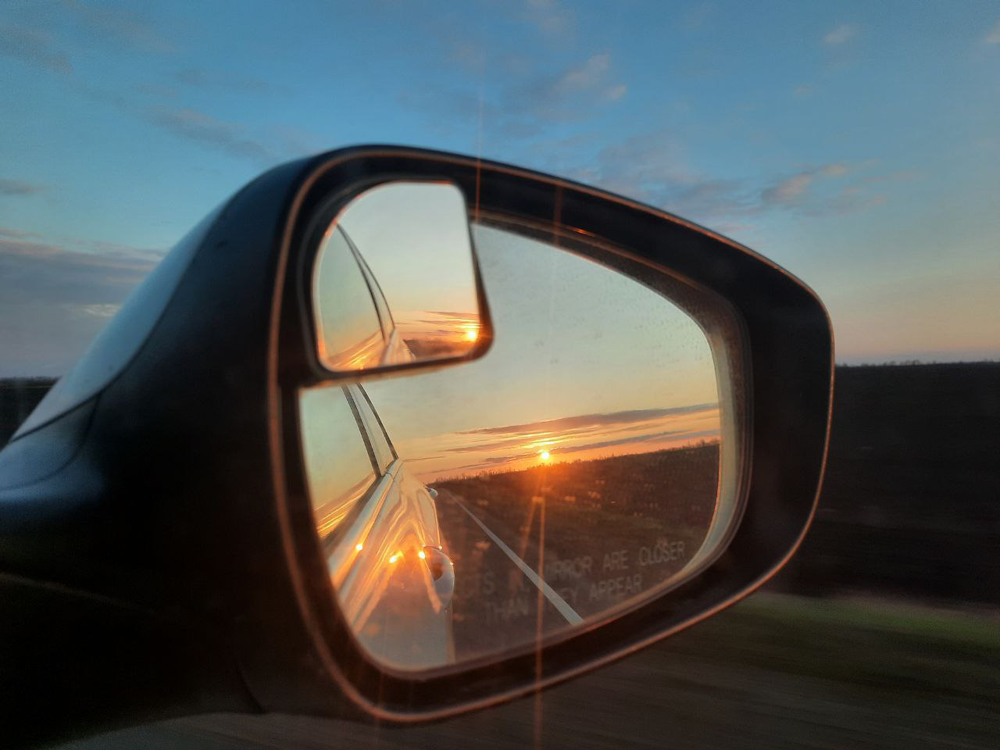
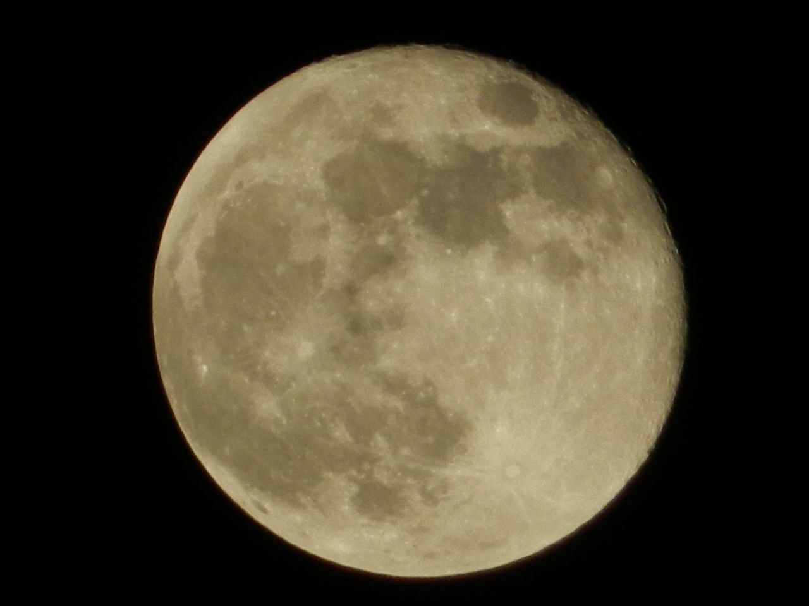

Про мене
Вітаю! Я Оля з Миколаєва - 42 рочки ☺️
Мій шлях до ІТ дуже довгий. Колись я закінчила універ інженером-системотехніком комп'ютерних систем. Але роботу
знайти було не реально тоді. І я, несподівано, стала бухгалтером. Так було довгих 13 років. Потім я наважилася
все змінити, звільнилася, шукала можливості і мені попалася тема веб-розробки. Я закінчила курси
фулстек. Гадаю, успішно. Вже був карантин і почалися пошуки роботи. Віддалена робота відкривала можливості, але
додалася вимога англійської. Технічні співбесіди я проходила, а мову не дотягувала. Почала вдосконалювати
англійську.
Здавалося, ось-ось мрія здійсниться. І почалась війна.(( Все було вже неважливо, треба було вижити, вберегти
дитину, опанувати стрес. Пам'ять швидко зтерла всі знання. І тут мені попався канал Євгена. Це, як
Бог любить трійцю. Я дуже надіюся, що цього разу я все зможу. Буду розуміти, як сказав Женя, всі ці штуки, що
літають навколо, і робити магію. 🥰
Так вийшло, що і тут я трохи не з тої сторони заходила. Бо спочатку проходила більш складні курси. Ну просто
бралася за те, що було доступне на даний момент. Але постійно розуміла, що системність базових знань втрачена і
мені цього не хватає. Дещо просто застаріле, чи що. Хочеться саме якісної і сучасної верстки. Готова задля цього
всотувати кожне слово Гуру цього курсу!
На зараз дуже важко просто жити далі, бо третій рік чоловік на фронті. Але я готуюся до перемоги, коли він
повернеться, ми всі повернемося додому, а я вже буду працювати.
Я безмежна вдячна Євгену за цю можливість, за те, що він з таким натхненням і відповідальністю ділиться своїм
безцінним досвідом. Впевнена, що саме з ним у нас все вийде! Успіхів всім! 💛💙
Улюблені тварини - дельфіни
Дельфіни – унікальні і дивовижні, інтелектуально розвинені істоти. Про їх високий рівень інтелекту ходять міфи, але повністю розгадати їх загадку, на жаль, не вдається навіть вченим. Деякі дослідники висувають дуже сміливі твердження про те, що дельфіни – найрозумніші тварини на землі. Нехай знання про дельфінів ще більше надихають нас дбайливо ставитись до цих тварин та берегти їхні середовища існування. 
Трохи фактів про дельфінів
- Існує 36 видів морських дельфінів, які мешкають у широкому діапазоні водних середовищ, таких як океани, прибережні зони, естуарії та прісні водойми. Температура цих середовищ варіюється від нижче 0°C до понад 30°C.1
- Один з видів дельфінів, про який ви можете не здогадуватися, це косатка. Косатки насправді гігантські дельфіни. Найменший вид дельфінів має довжину близько 1,2 м – Мауї-дельфіни. Найбільшим з дельфінів є косатка. Всупереч своєму прізвиську, косатка зовсім не є китом. Вважається, що назва походить від давніх моряків, які бачили, як косатки полюють на більших китів. Цей вид широко розповсюджений, населяє всі океани Землі, але віддає перевагу холодним полярним водам, що оточують Антарктиду, Аляску та північну частину Тихого океану.
- Дельфіни вміють регулювати обтічність свого тіла: першим на це звернув увагу англієць Джеймс Грей, якого здивувала висока швидкість плавання тварин. Грей з’ясував, що за законами гідродинаміки, щоб рухатися з такою швидкістю, дельфіни повинні володіти набагато більшою м’язовою силою або вміти віртуозно керувати обтічністю свого тіла. Гладка і еластична шкіра дельфінів покрита маслянистими виділеннями, що допомагає їм плавати з більшою швидкістю.
- Грація на фото:
- 
- 
- Дельфіни є одним з небагатьох морських видів чий стиль полювання схожий на вовчу зграю, де вони працюють разом і кожна тварина має певну роль. Це робить їх дуже вправними мисливцями. Під час полювання дельфіни створюють бульбашки, щоб вигнати здобич на поверхню. Вони також використовують техніку, яка називається «рибозабивання», коли вони оглушують рибу хвостом, щоб її було легше зловити.
- Мозок дельфіна більше людського і має в два рази більше звивин. Крім цього дельфіни вміють користуватися обома півкулями по черзі. Наприклад, коли у дельфіна закрите ліве або праве око, це означає, що ліва або права півкуля головного мозку спить, а друга в цей момент активна. Як люди і мавпи, дельфіни здатні обробляти інформацію, а також вчитися і пам’ятати, що дуже допомагає їм виживати. Завдяки високому інтелекту і відмінним навичкам полювання деякі види дельфінів живуть дуже довго, від 40 до 70 років.
- Частина дослідників вважає, що рівень IQ деяких дельфінів перевищує середні показники людини. Це не означає, що дельфіни розумніші за людей, але явно свідчить про неймовірно високий інтелект окремих дельфінів.
Моє захоплення - фотографія
Мене з дитинства захоплює фотографія. Мій тато завжди все фотографував. І я це просто обожнюю. Особливо гарні краєвиди. Але моя головна любов - то Місяць 🌑 🥰
Нажаль, гарно фото поки не поставлю 😁 Буде так!
- 
- 
- 
-

- 
-

- 
- 
- 
P.S. Найкращі фото дуже великі, але дотримуємось вивченого матеріалу. Тому вони сюда не попали ((